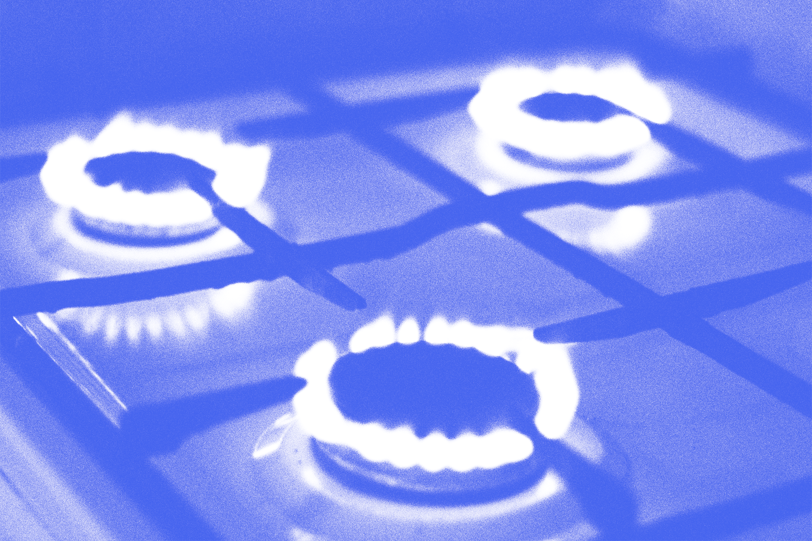

А у нас в квартире газ!
30.03.2023 11:10
Бытовое
Неочевидная очевидность



Утечка газа в доме — это опасное явление, которое может привести к пожару или взрыву. Газ может утекать из труб, которые доставляют его из главной линии газопровода в дом, или из газовых приборов, которые используются внутри дома, таких как плиты, котлы и водонагреватели.
Как выглядит утечка газа, и в чем ее опасность?

Деньги, как и газ, имеют свойства улетучиваться

Что делать при утечке газа?
1. Покинуть помещение, где обнаружена утечка газа. Не пользуйтесь электрическими приборами, не зажигайте свечи и не курите внутри дома.
2. Вызвать экстренную службу газа.
3. Если возможно, выключите газовый счетчик и отключите главный выключатель электричества.
4. Не пытайтесь устранить утечку газа самостоятельно, не используйте вентиляторы или кондиционеры, чтобы проветривать помещение.
5. Если у вас есть маска или тканевая повязка, наденьте ее на нос и рот, чтобы защититься от вдыхания газа.
6. После того, как вы покинули помещение, не возвращайтесь туда до тех пор, пока не будут приняты меры по устранению утечки газа и не будет дано разрешение на возвращение экспертами.
Один мужчина заметил запах газа в своем доме и решил немедленно вызвать службу газа. Они прибыли через несколько минут и начали проверять дом. После долгой проверки, один из рабочих встал и сказал: «Мы нашли проблему. Ваша жена готовила капусту».
Вам также пригодится:

Клещи против комаров

10 самых badass змей

А у нас в квартире газ!

Слишком много воды